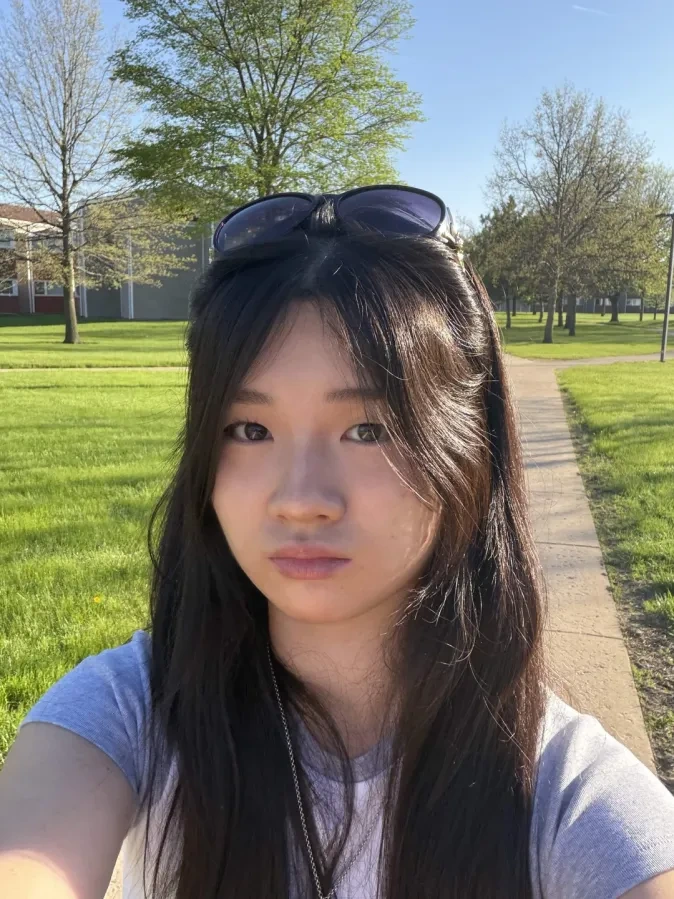
Melanie
Software
Hi! I'm Melanie, a junior and the Captain/Software lead this year. Outside of robotics, I am an ardent fan of oil painting and experimental music.
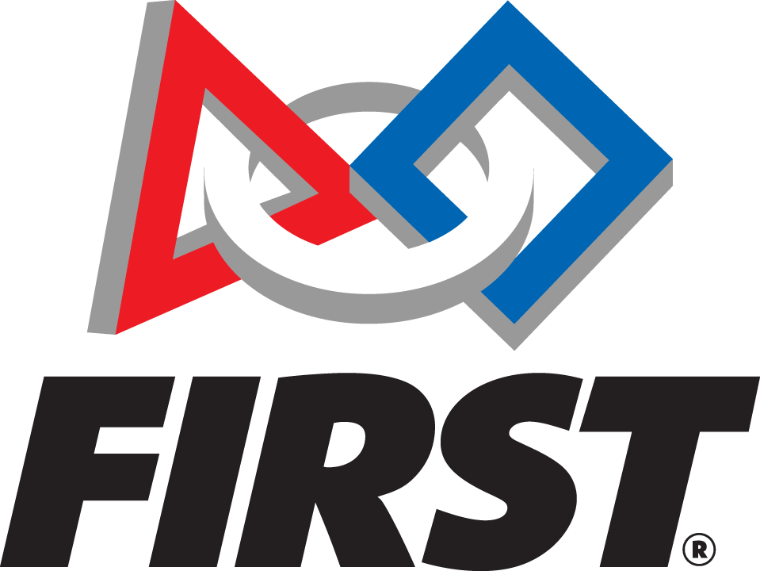
FIRST (For Inspiration and Recognition of Science and Technology) is a nonprofit organization that introduces young people to science and engineering through team robotics programs. Students build robots, solve problems, and learn to work together. Its three programs are FIRST LEGO League (FLL), which combines LEGO robotics and research; FIRST Tech Challenge (FTC), where students design and program robots for an annual game; and FIRST Robotics Competition (FRC), where high school teams build larger robots for competition.
Learn about FIRST (opens in a new tab)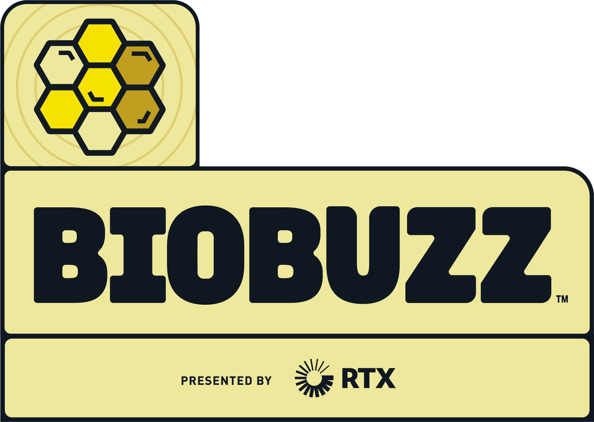
FIRST Tech Challenge brings together students in grades 7–12 to design, build, and program robots for a new game each season. Teams work with mentors, compete with other teams, and share what they learn through outreach. The 2026–27 game is BIOBUZZ, presented by RTX, a challenge inspired by the natural world and part of the FIRST CANOPY season.
Learn about FIRST Tech Challenge (opens in a new tab)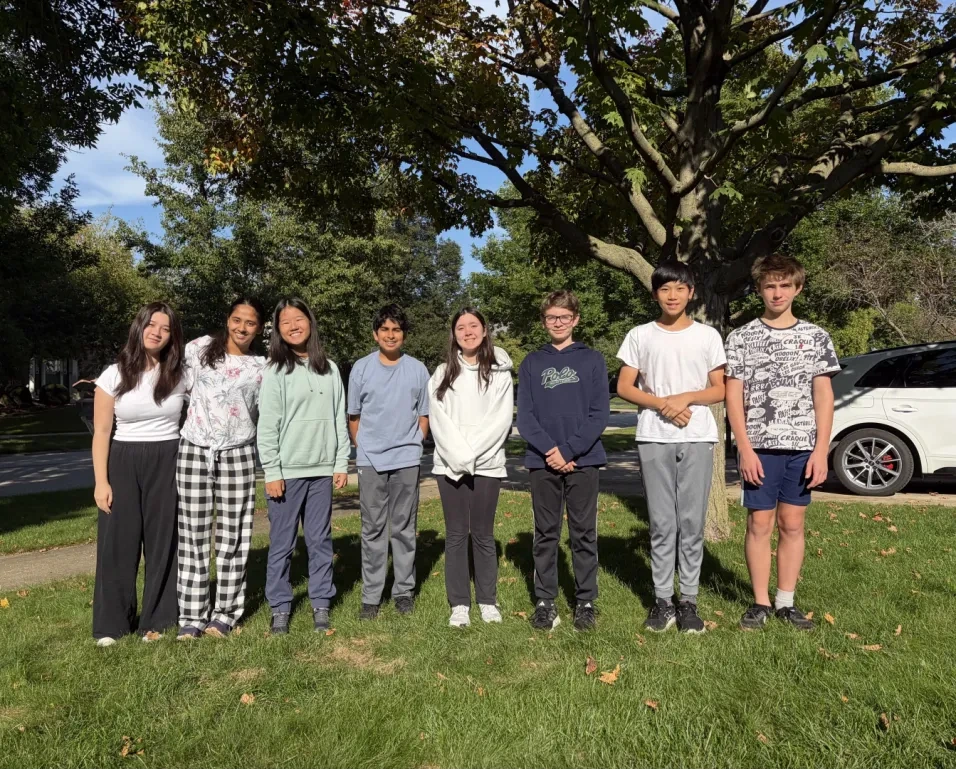
Established 2022
Our team is made up of 8 members across the Chicagoland area. We have been competing in FTC for four years.
We aim to bring together students from schools across Chicagoland and inspire the next generation of engineers by creating opportunities for young students interested in STEM. We want students of all backgrounds, regardless of gender or economic status, to have access to an encouraging environment where they can explore engineering, collaborate with others, and develop their ideas.

Software
Hi! I'm Melanie, a junior and the Captain/Software lead this year. Outside of robotics, I am an ardent fan of oil painting and experimental music.
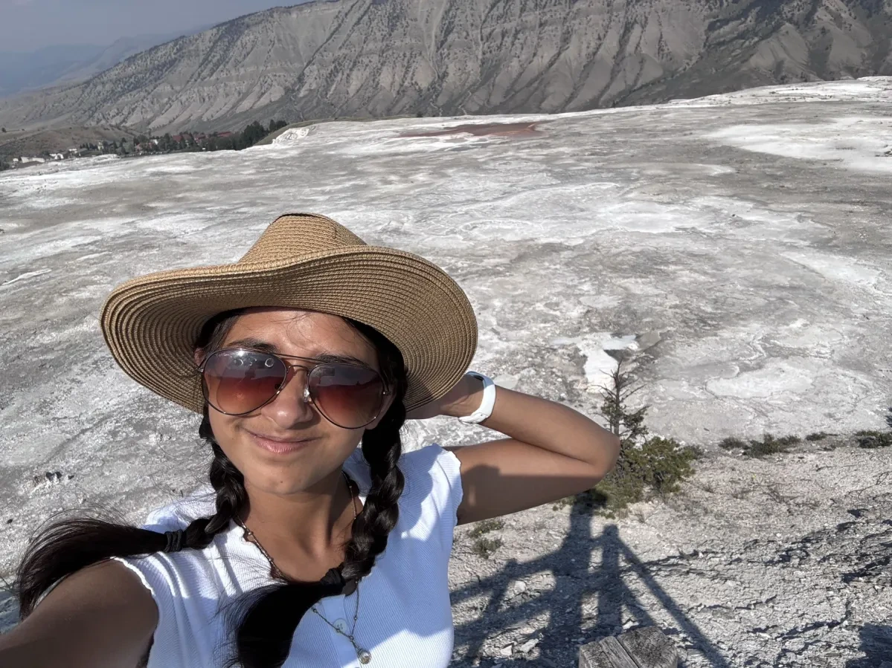
Outreach
Hi! I'm Ishika, and I'm a junior and this year's outreach lead. Outside of robotics, I like to crochet and play badminton!
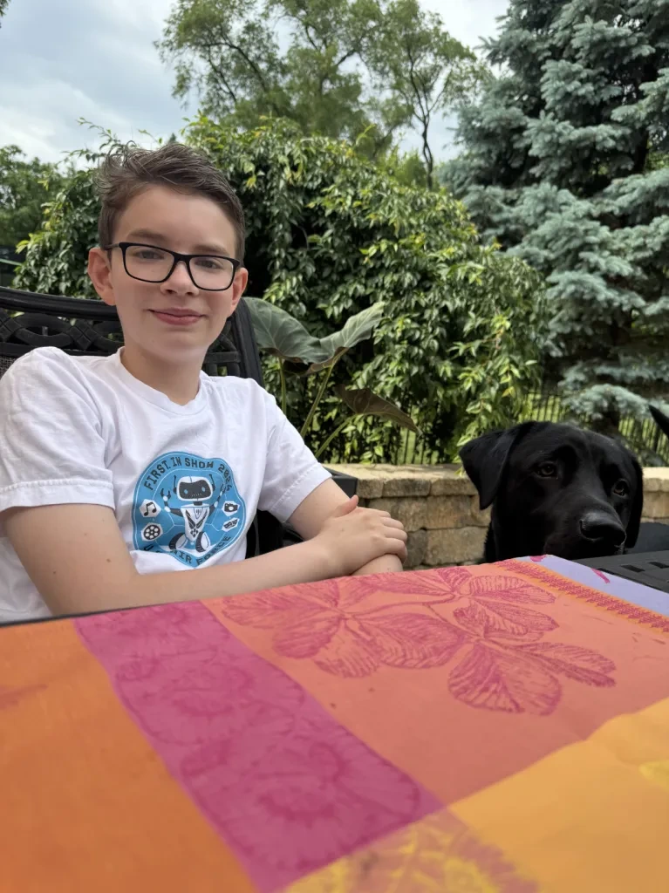
Outreach, CAD, and Hardware
Hi! I'm Rokas, and I'm in 8th grade and a team member in outreach, CAD, and hardware. Outside of robotics, I like to read and play soccer.
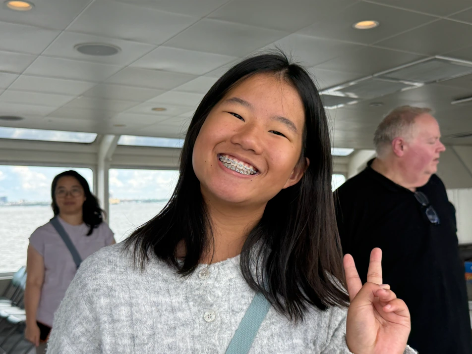
Hardware and Outreach
Hi! I'm Lucia and I'm in 8th grade. I'm the project manager, and a member of the hardware and outreach subteams. Outside of robotics, I enjoy reading and spending time with my friends.
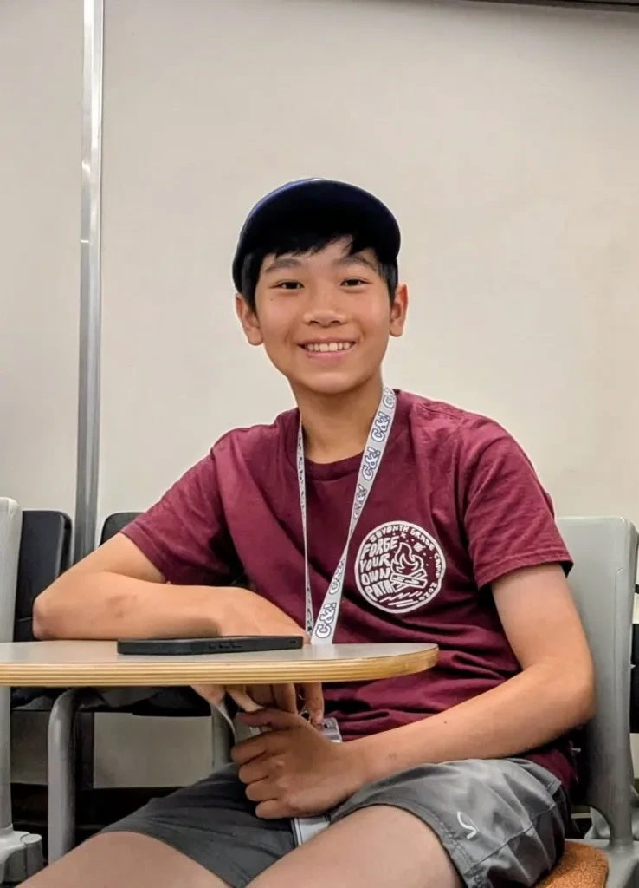
Outreach, CAD, and Hardware
Hi! I'm Andy, and I'm an 8th grader and a team member in outreach, CAD, and hardware. Outside of robotics, I like ping-pong and tennis!
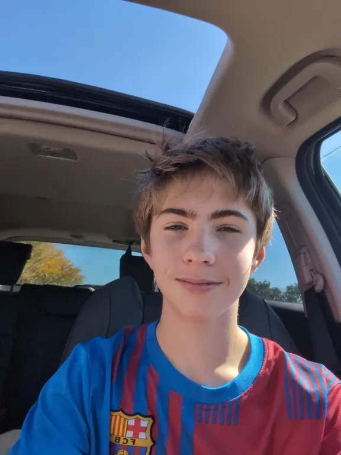
Outreach, CAD, and Hardware
Hi! I'm Zaibas, and I'm an 8th grader and a team member in outreach, CAD, and hardware. Outside of robotics, I like to ride my bicycle and play soccer!
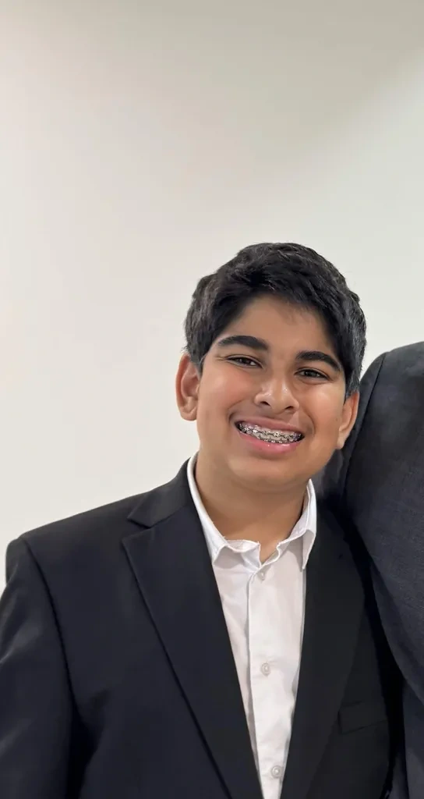
Outreach and Hardware
Hi! I'm Rohan, and I'm in 8th grade. I am part of this year's outreach and hardware teams. Outside of robotics, I like to play basketball and soccer.
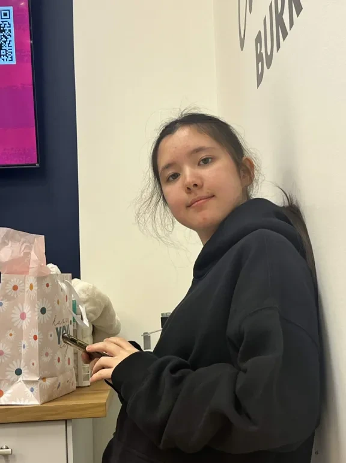
Outreach and Hardware
Hi! I'm Mia, and I'm an 8th grader and a team member in outreach and hardware.
Contact us to ask about the team and opportunities to get involved.